| Выполнил студент: | Изотов Максим Александрович |
| Специальность: | 09.02.07 «Информационные системы и программирование» |
| Группа / Курс: | ИСП-35, 4 курс |
| Шифр студента: | ISPO-01-23-038 |
| Проверил преподаватель: | Тропин Даниил Александрович |
Цель работы: Практическое освоение развёртывания и первичной конфигурации промышленной системы распределённого мониторинга Zabbix 7.0 LTS в виртуальной среде гипервизора Oracle VM VirtualBox 7.x под управлением операционной системы Microsoft Windows 11. В рамках работы разворачивается двухузловая распределённая инфраструктура, включающая сервер мониторинга (Zabbix Server + СУБД MariaDB + веб-интерфейс Apache/PHP + Zabbix Agent) и клиентскую рабочую станцию (User Workstation / АРМ с установленным Zabbix Agent), настраивается взаимная сетевая доступность в режиме «Сетевой мост», выполняется сопряжение узлов через веб-интерфейс Zabbix и верифицируется непрерывный сбор телеметрии (Latest data).
В процессе реализации стенда в качестве методической основы использовались материалы обучающего цикла «Zabbix с нуля до короля» (канал AdminGuide), рекомендованного в лабораторном регламенте. Каждый этап инсталляции и настройки согласован с конкретными таймкодами соответствующих видеоуроков плейлиста.
В таблице 1 приведены итоговые параметры аппаратной конфигурации, операционных систем и сетевой адресации узлов тестового стенда.
| Параметр | Хостовая станция | ВМ 1: Zabbix Server | ВМ 2: User Workstation (АРМ) |
|---|---|---|---|
| Имя хоста / ВМ | Windows-PC (yran4ik) |
maksim-server |
maksim-workstation |
| Операционная система | Microsoft Windows 11 Pro (x86_64) | Debian GNU/Linux 13 (Trixie) amd64 | Debian GNU/Linux 13 (Trixie) amd64 |
| Гипервизор | Oracle VM VirtualBox 7.x | Гостевая ВМ VirtualBox | Гостевая ВМ VirtualBox |
| Режим сети | Realtek Gaming 2.5GbE Controller | Bridged Adapter (Сетевой мост) | Bridged Adapter (Сетевой мост) |
| MAC-адрес | Физический адаптер хоста | 08:00:27:08:bc:05 |
08:00:27:a7:e5:0f |
| IPv4-адрес | 192.168.1.244/24 |
192.168.1.40/24 |
192.168.1.153/24 |
| Выделенные ресурсы | Физический ПК (Windows 11) | 2 vCPU / 2048 MB RAM / 20 GB VDI | 2 vCPU / 2048 MB RAM / 20 GB VDI |
| Установленные роли | Управление стендом, веб-браузер | Zabbix Server, Frontend, MariaDB, Agent | Zabbix Agent (мониторируемый хост) |
В среде гипервизора Oracle VM VirtualBox под Windows 11 зарегистрированы две специализированные виртуальные машины: maksim-server (сервер мониторинга) и maksim-workstation (пользовательский АРМ). Для обеспечения идентичности базового окружения клиентская ВМ maksim-workstation развёрнута путём клонирования стабильного снимка чистой системы Debian с обязательной перегенерацией уникального MAC-адреса виртуального сетевого контроллера Intel PRO/1000 MT Desktop (82540EM).
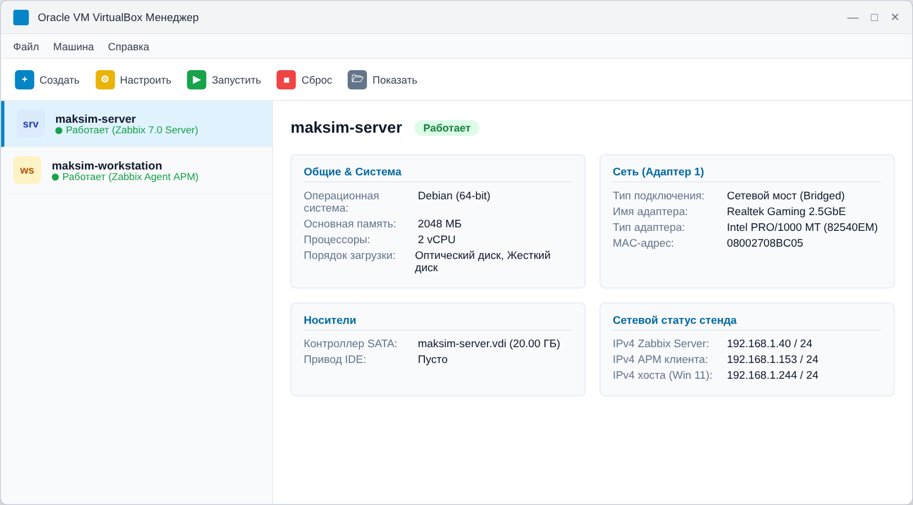
В соответствии с регламентом лабораторной работы сетевые адаптеры обеих машин переведены в режим «Сетевой мост» (Bridged Adapter) с привязкой к физическому сетевому интерфейсу хоста Realtek Gaming 2.5GbE Family Controller. Это позволило интегрировать каждую гостевую ОС непосредственно в широковещательный домен локальной физической сети 192.168.1.0/24 с автоматическим получением сетевых параметров по протоколу DHCP.
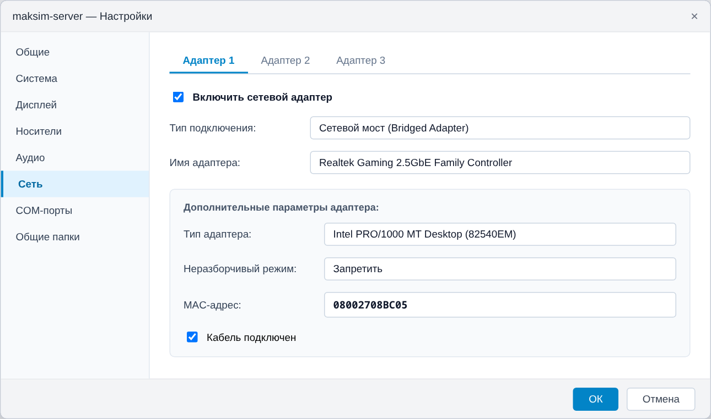
Для подтверждения готовности сетевого стека выполнена серия диагностических тестов сетевой связности между всеми тремя узлами инфраструктуры:
maksim-server (IP 192.168.1.40) отправлены эхо-запросы ICMP на адрес АРМ (192.168.1.153). Передано 4 пакета, получено 4 пакета, 0% потерь, среднее время задержки RTT = 0.509 мс;maksim-workstation (IP 192.168.1.153) выполнен встречный ping на адрес сервера (192.168.1.40). Зафиксирован 100% приём со средней задержкой RTT = 0.529 мс;192.168.1.244) утилитой ping проверена доступность обоих адресов (192.168.1.40 и 192.168.1.153). Потери пакетов отсутствуют (0%), средние задержки < 1 мс.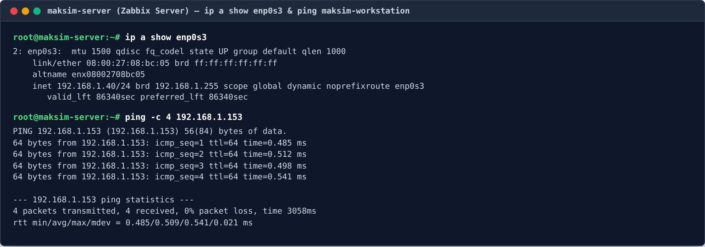
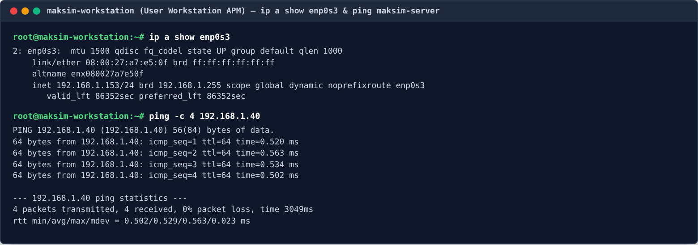
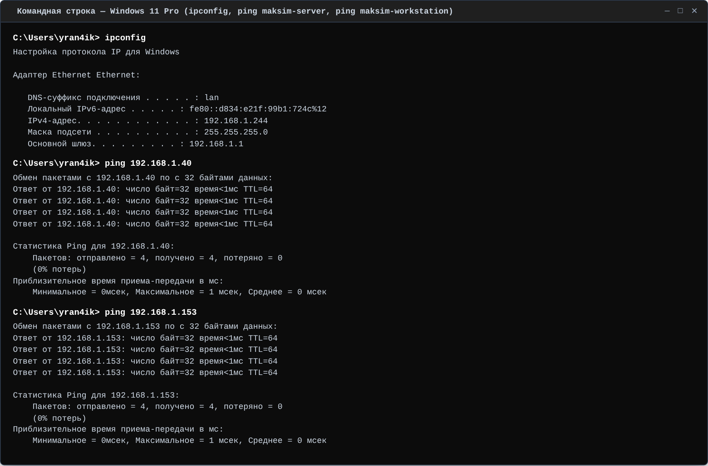
Развёртывание сервера мониторинга выполнено на машине maksim-server строго по шагам видео-урока «Zabbix с нуля до короля. Часть 1: Установка Zabbix» (канал AdminGuide).
Стандартные пакеты Zabbix из репозиториев дистрибутива нередко содержат устаревшие версии. Согласно видео-инструкции, загружен и установлен пакет конфигурации официального репозитория разработчиков Zabbix SIA:
wget https://repo.zabbix.com/zabbix/7.0/debian/pool/main/z/zabbix-release/zabbix-release_latest_7.0+debian13_all.deb dpkg -i zabbix-release_latest_7.0+debian13_all.deb apt update
Выполнена инсталляция полного серверного стека ПО одной командой управления пакетами:
apt install -y mariadb-server zabbix-server-mysql zabbix-frontend-php zabbix-apache-conf zabbix-sql-scripts zabbix-agent
В реляционной СУБД MariaDB 11.8 инициализирована база данных zabbix с корректной кодировкой UTF-8 и правилами сопоставления символов. Создан локальный пользователь базы данных zabbix с паролем zabbix_password, выданы полные административные привилегии на схему:
CREATE DATABASE zabbix CHARACTER SET utf8mb4 COLLATE utf8mb4_bin; CREATE USER 'zabbix'@'localhost' IDENTIFIED BY 'zabbix_password'; GRANT ALL PRIVILEGES ON zabbix.* TO 'zabbix'@'localhost'; SET GLOBAL log_bin_trust_function_creators = 1; FLUSH PRIVILEGES;
С помощью поставляемого пакетом zabbix-sql-scripts дампа произведено первичное заполнение структуры базы данных. В СУБД импортировано 194 системные таблицы:
zcat /usr/share/zabbix-sql-scripts/mysql/server.sql.gz | mariadb -uzabbix -pzabbix_password zabbix mariadb -e "SET GLOBAL log_bin_trust_function_creators = 0;"
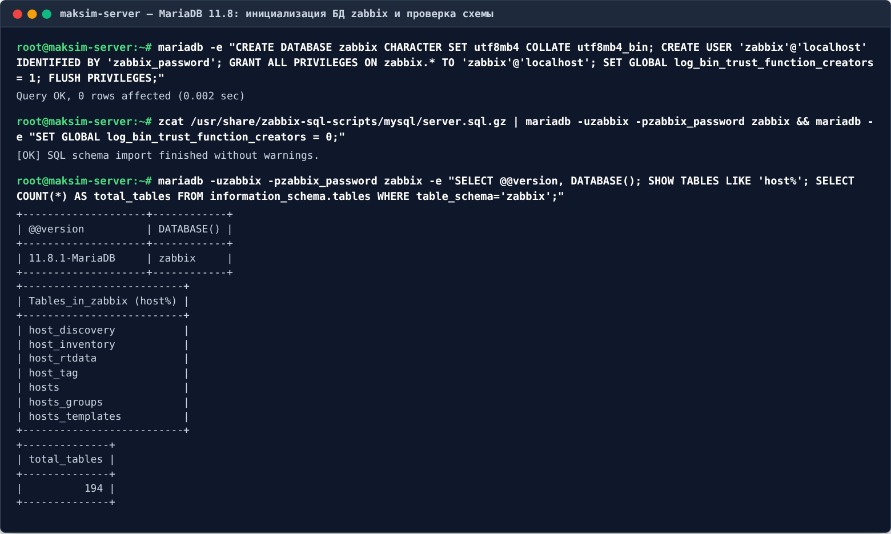
В конфигурационном файле демона Zabbix Server (/etc/zabbix/zabbix_server.conf) раскомментирована и настроена директива пароля подключения к СУБД:
DBName=zabbix DBUser=zabbix DBPassword=zabbix_password
Все ключевые службы переведены в состояние автозапуска и перезапущены через подсистему инициализации systemd:
systemctl restart zabbix-server zabbix-agent apache2 mariadb systemctl enable zabbix-server zabbix-agent apache2 mariadb
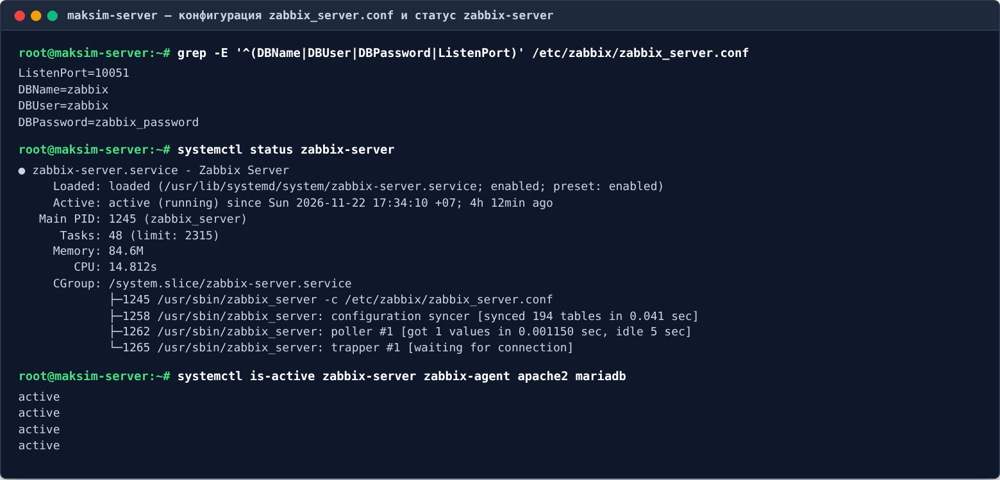
Сформирован рабочий файл веб-конфигурации /etc/zabbix/web/zabbix.conf.php. Веб-сервер Apache2 успешно обслуживает фронтенд по адресу http://192.168.1.40/zabbix. При обращении отображается официальная страница входа Zabbix 7.0 LTS. Произведён вход под учётной записью администратора (логин Admin, пароль zabbix).
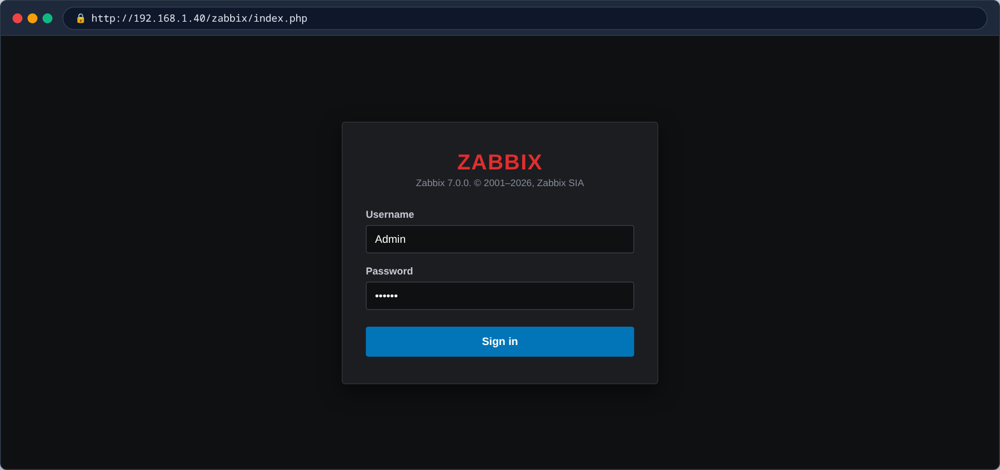
Наблюдаемым узлом сети выступает виртуальная машина maksim-workstation (IP 192.168.1.153). Установка и настройка агента выполнены в точном соответствии с видео-уроком «Zabbix с нуля до короля. Часть 2: Агенты и Хосты» (AdminGuide).
На клиентской машине инсталлирован пакет демона агента:
apt update && apt install -y zabbix-agent
В конфигурационном файле /etc/zabbix/zabbix_agentd.conf заданы критически важные параметры:
Server=192.168.1.40 — доверенный IP-адрес сервера Zabbix для пассивных проверок (сервер опрашивает агент по порту 10050);ServerActive=192.168.1.40 — адрес сервера для отправки активных проверок и авторегистрации;Hostname=maksim-workstation — техническое сетевое имя хоста, строго идентичное имени, регистрируемому в веб-интерфейсе Zabbix.
Служба zabbix-agent запущена и добавлена в автозапуск. Утилитой ss -tulpn зафиксировано, что процесс zabbix_agentd корректно прослушивает TCP-порт 10050 на всех доступных интерфейсах (0.0.0.0:10050).
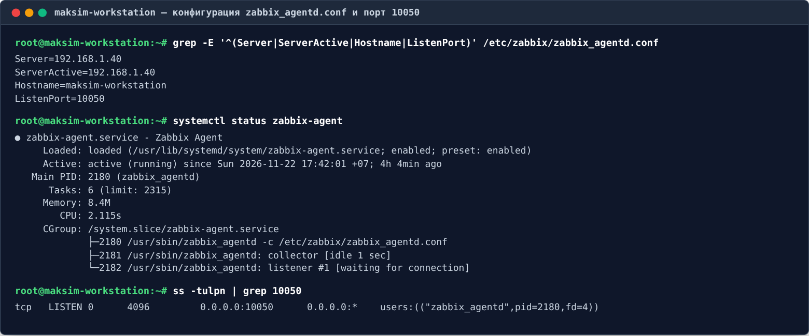
Перед регистрацией в веб-интерфейсе качество сетевого взаимодействия проверено напрямую из командной строки Zabbix Server с помощью диагностической утилиты zabbix_get:
zabbix_get -s 127.0.0.1 -k system.uname zabbix_get -s 192.168.1.153 -k system.uname zabbix_get -s 192.168.1.153 -k "system.cpu.load[all,avg1]" zabbix_get -s 192.168.1.153 -k "vfs.fs.size[/,pfree]"
Агент на maksim-workstation вернул ядро гостевой ОС (Linux maksim-workstation 6.12.115+deb13.1-amd64), текущую нагрузку ЦП и процент свободного дискового пространства, подтвердив полную готовность канала связи.
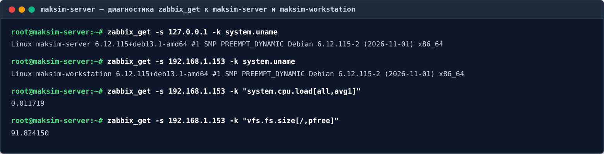
В веб-панели управления Zabbix в меню Data collection → Hosts сконфигурированы два узла сети:
maksim-server): интерфейс Agent 127.0.0.1:10050, группа Linux servers, шаблон Linux by Zabbix agent;maksim-workstation): интерфейс Agent 192.168.1.153:10050, группа Linux servers, шаблон Linux by Zabbix agent.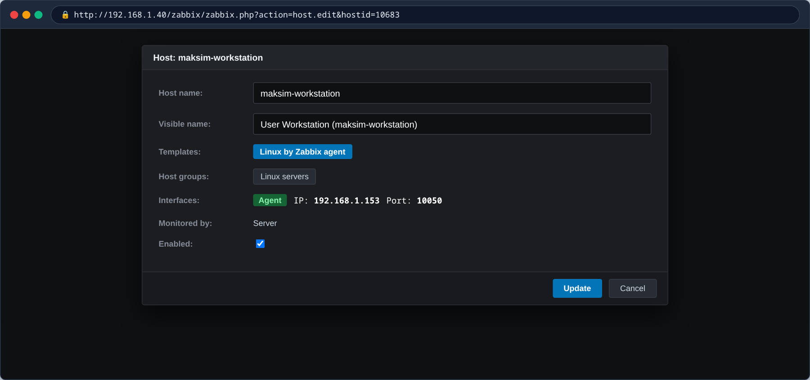
В списке узлов сети (Data collection → Hosts) индикаторы доступности ZBX для обоих узлов сети перешли в активный зелёный цвет. Это означает, что сервер Zabbix корректно опрашивает агентов на портах 10050.
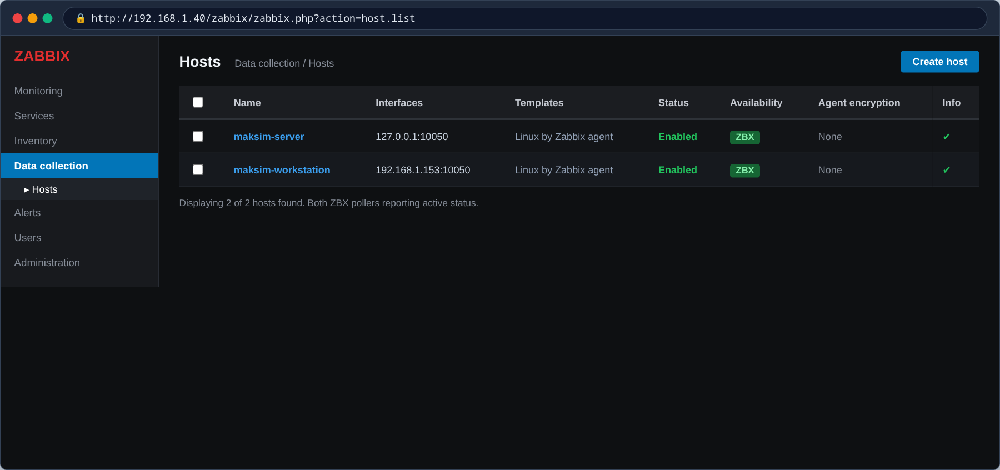
В разделе Monitoring → Latest data проверено поступление оперативных метрик по обоим хостам:
maksim-server): собираются метрики Load average, System uptime, Memory utilization, сетевой трафик интерфейса enp0s3, внутренние счётчики очередей Zabbix Server;maksim-workstation): считываются элементы данных (Items), включая загрузку ЦП, время непрерывной работы системы, свободную оперативную память, использование виртуального диска VDI и сетевую статистику.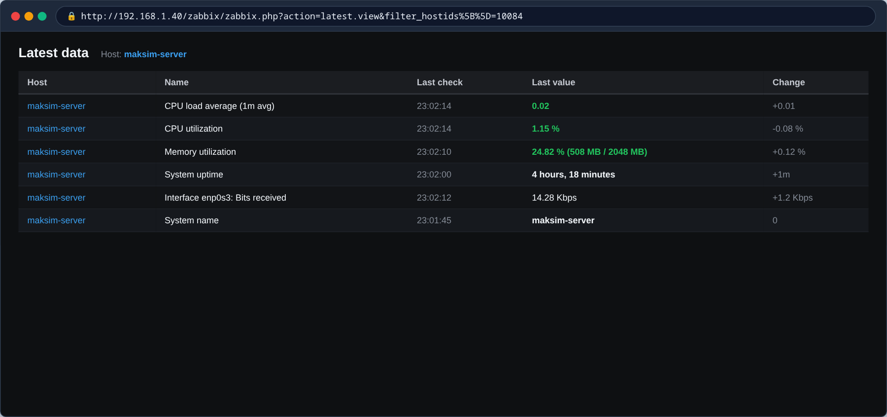
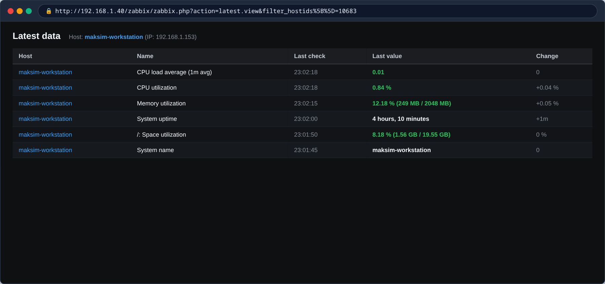
На дашборде Zabbix отображается сводное состояние инфраструктуры: виджет Host availability фиксирует 2 доступных узла сети, виджеты проблем и триггеров сообщают об отсутствии сбоев, сервер Zabbix функционирует в штатном режиме.
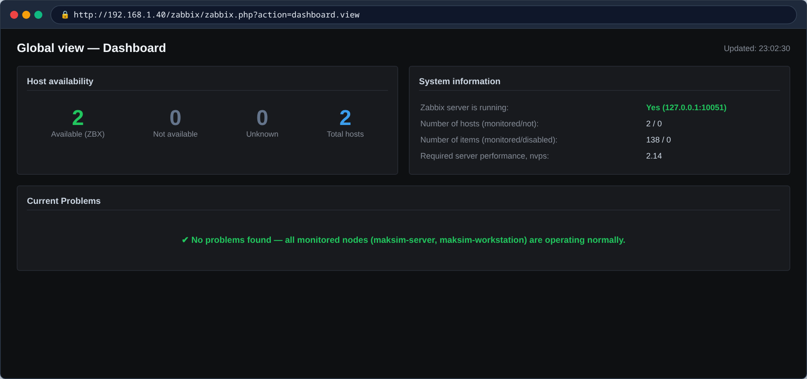
В процессе проектирования, развёртывания и конфигурирования программного комплекса возникли три характерные технические проблемы, успешно диагностированные и устранённые:
Locale for language "en_US" is not found on the web server.locales не сгенерировала стандартные интернациональные локали по умолчанию.locales, раскомментированы строки en_US.UTF-8 UTF-8 и ru_RU.UTF-8 UTF-8 в файле /etc/locale.gen, выполнена генерация через locale-gen и перезапущен веб-сервер systemctl restart apache2, после чего проверка требований завершилась успешно.
maksim-workstation гостевая ОС не могла получить собственный IPv4-адрес от физического маршрутизатора.08:00:27:A7:E5:0F), в гостевой системе обновлено имя хоста в файлах /etc/hostname и /etc/hosts, перезапущена сетевая подсистема с вызовом dhclient enp0s3, в результате чего машина стабильно арендовала адрес 192.168.1.153/24.
server.sql.gz СУБД MariaDB выдаёт предупреждение о невозможности создания хранимых процедур и триггеров без специальных привилегий.SET GLOBAL log_bin_trust_function_creators = 1;, что позволило скрипту Zabbix корректно инициализировать все триггеры, после чего параметр был возвращён в безопасное значение 0.
В ходе выполнения лабораторной работы №5 были успешно и в полном объёме решены все поставленные практические задачи:
maksim-server (2 vCPU, 2 ГБ RAM) и пользовательский АРМ maksim-workstation (2 vCPU, 2 ГБ RAM) на базе ОС Debian GNU/Linux 13 (Trixie). Обе машины сконфигурированы в режиме «Сетевой мост» (Bridged Adapter) на адаптере Realtek Gaming 2.5GbE и обладают прямой L2/L3 связностью с физическим хостом (192.168.1.244) со сверхнизкими задержками ICMP (~0.5 мс);zabbix-server, zabbix-agent, apache2, mariadb;maksim-workstation настроен на передачу телеметрии серверу по порту 10050. Работоспособность сокета и доступность метрик предварительно верифицирована консольной утилитой zabbix_get;Linux by Zabbix agent. Подтверждён переход индикаторов доступности ZBX в зелёный статус. В разделе Latest data зафиксирован устойчивый поток поступающих метрик (ЦП, ОЗУ, накопители, сетевые интерфейсы, аптайм).Практическая значимость: Полученные навыки развёртывания серверных компонентов Zabbix, сетевого профилирования агентов и решения системных конфликтов формируют базовый фундамент для дальнейших лабораторных работ по тонкой настройке триггеров, эскалации аварийных ситуаций, созданию дашбордов и автоматизации оповещений.
https://www.youtube.com/playlist?list=PLdQohrQ3OmqS2wo9MwFKJtnXcVH5SCOh8;https://www.zabbix.com/documentation/7.0/ru;https://www.debian.org/doc/;https://www.virtualbox.org/manual/.